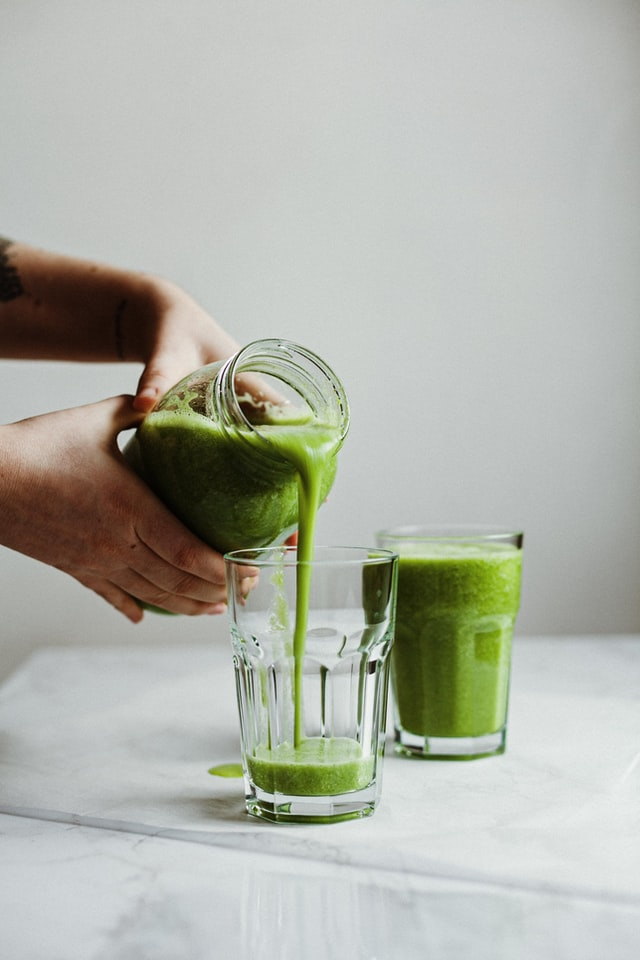

Breakfast Smoothies
Main Page
Bacon Burgers
Sandwich

Green Breakfast Smoothie
This a healthy breakfast smoothie my fiance' has been drinking every single day now for over a year. I've only had it a few times but it is very delicious!
Ingredients
- 8 ounces of almond milk
- 2 tablespoons of pumpkin seeds (can be switched with dried coconut shavings)
- 2 servings of desired protein poweder (plain flavors like vanilla or chocolate work best)
- 8 ounces of fresh spinach
- 1 whole banana
- ice is optional if you prefer it cold
Steps
- put in all ingredients into blender pro tip: put in protein powder after milk so it doesn't stick to the sides of the blender!
- blend
- serve immediatly or can be stored in fridge for up to 2 days